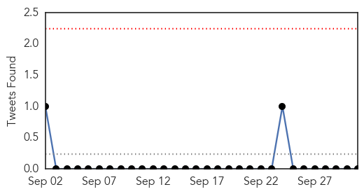

30 Day Trends
Web: 5 alerts, 3 warnings
Twitter: 0 alerts, 0 warnings
Top Articles:
- 1.000
- Protect yourself from the flu
- 0.998
- Flu season begins, but experts say vaccine should do the trick
- 0.998
- www.cowracommunitynews.com
- 0.998
- Hundreds show up for Drive-Thru Flu Clinic
- 0.997
- Officials hoping this year’s flu shot better than last year’s
- 0.996
- Flu season begins, but experts say this year's vaccine should do the trick
- 0.994
- Flu season begins: Will vaccine be effective?
- 0.993
- WDH Warns About Overlooking Need For Flu Vaccination
- 0.993
- Flu shot clinics continue in Madison County for 2015 flu season
- 0.992
- OCTOBER FLU VACCINE CLINICS SCHEDULED
- 0.980
- Four-Strain Influenza Vaccine Available this Flu Season in Public Health Programs -- TORONTO, Sept. 30, 2015
- 0.948
- Adult flu shots offered free in Lincoln County
- 0.936
- GCHD announces Flu Clinic dates
- 0.932
- Flu Season is Here
- 0.929
- 165 hospitals under the scanner
- 0.902
- Bird Flu Has U.S. Farmers Building Fences, Hosing Down Visitors
- 0.895
- Today's stories from newspapers in Flamborough
- 0.875
- Understanding The 2015 Wisconsin Avian Flu Epidemic: The State's Response
- 0.871
- Living with Lyme Disease
- 0.863
- 'Up to five million Italians to catch flu this year'
- 0.846
- After life-threatening scare, Sampson County family makes flu vaccine a priority :: WRAL.com
- 0.812
- Flu Shot As Craig's List Ad
- 0.782
- Flu shot schedule released
- 0.766
- Alaska Regional Hospital to offer free drive-thru flu shots
- 0.761
- Kaiser Permanente health care workers ratify deal that includes a flu vaccination policy
- 0.751
- Understanding The 2015 Wisconsin Avian Flu Epidemic: Preparing For The Future
- 0.751
- September 30, 2015 Archives
- 0.751
- September 30, 2015 Archives
- 0.704
- Flu season has arrived
- 0.593
- Therapeutic Focus: Vaccines
- 0.571
- Bird flu: Government intensifies sensitisation on bio-security
- 0.545
- Officials seek growers’ help in avian flu fight
Top Tweets:
-
No tweets found for Oct 01, 2015
Web/News Articles

Tweets
Article Locations